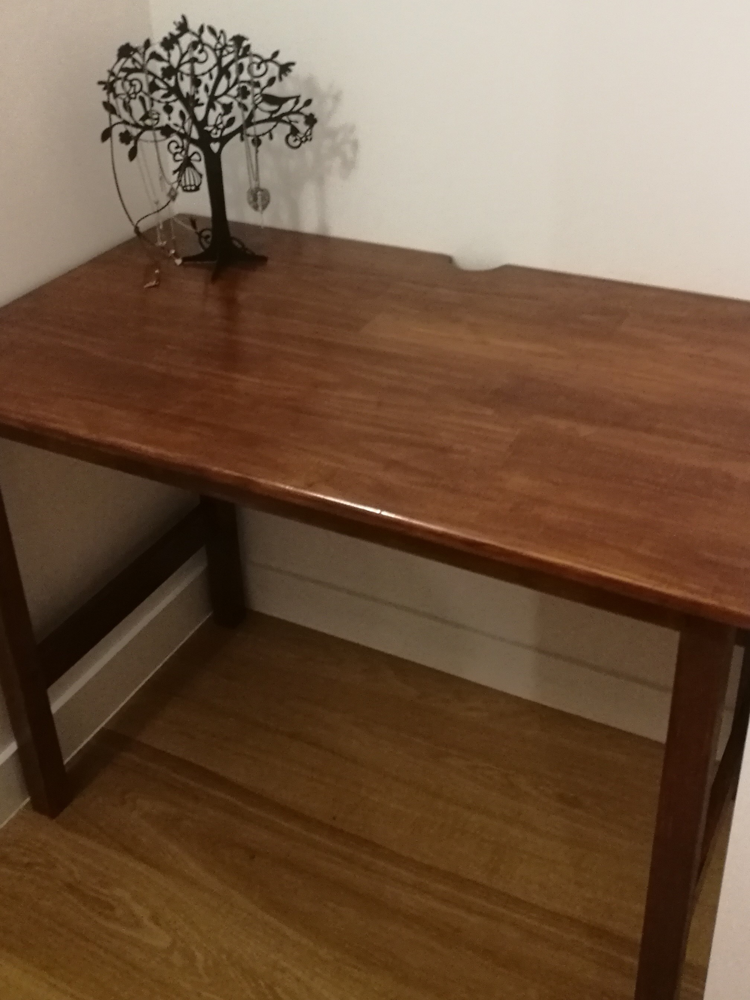

Picture Frame
Simple classic custom

My degree didnt come in a standard size and my university was going to charge hundreds to frame it. This simple frame was easy to make and doesnt cost hundreds.
Desk
Lightweight smooth efficient
This desk was custom build to the small space between a build in wardrobe and the wall. It was 20cm too small of a gap to buy a standard size desk. I was able to make a desk to fit the space perfectly and not over crowd the space. The notch at the back allows easy cable management without having to move the desk in and out.